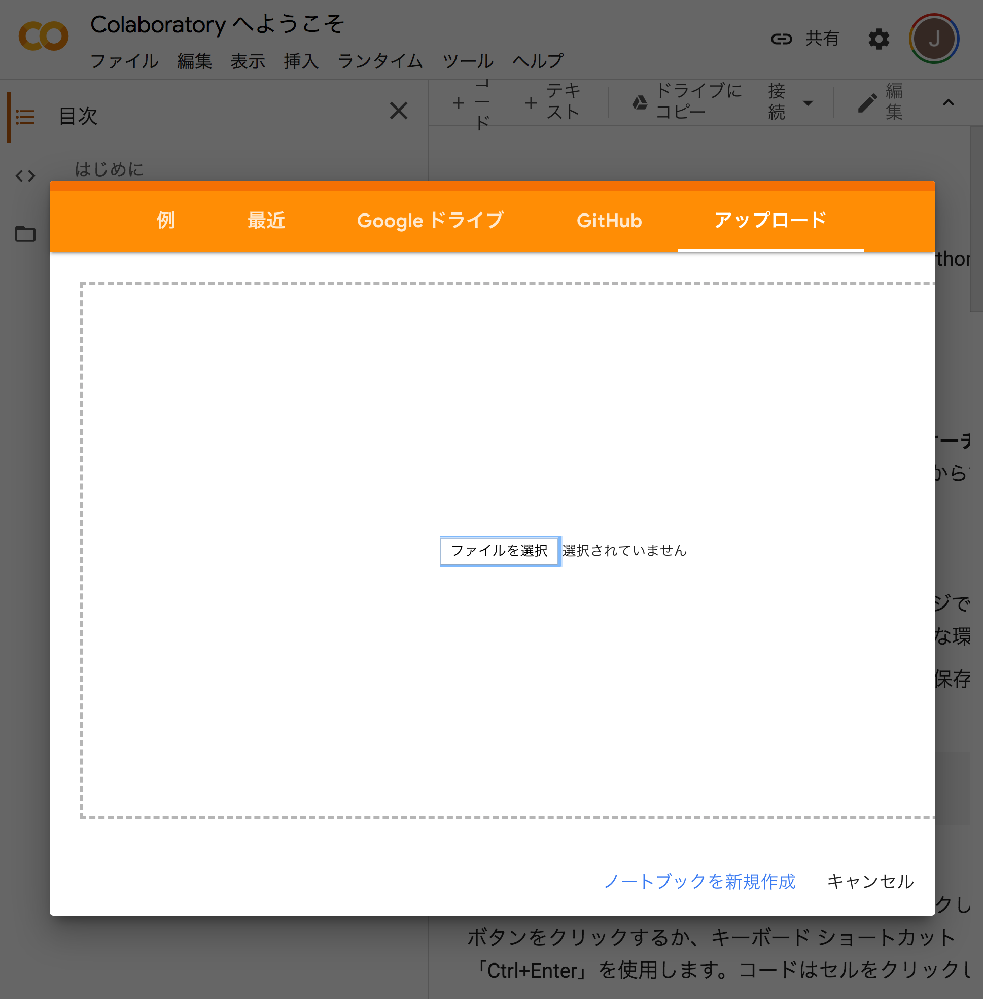
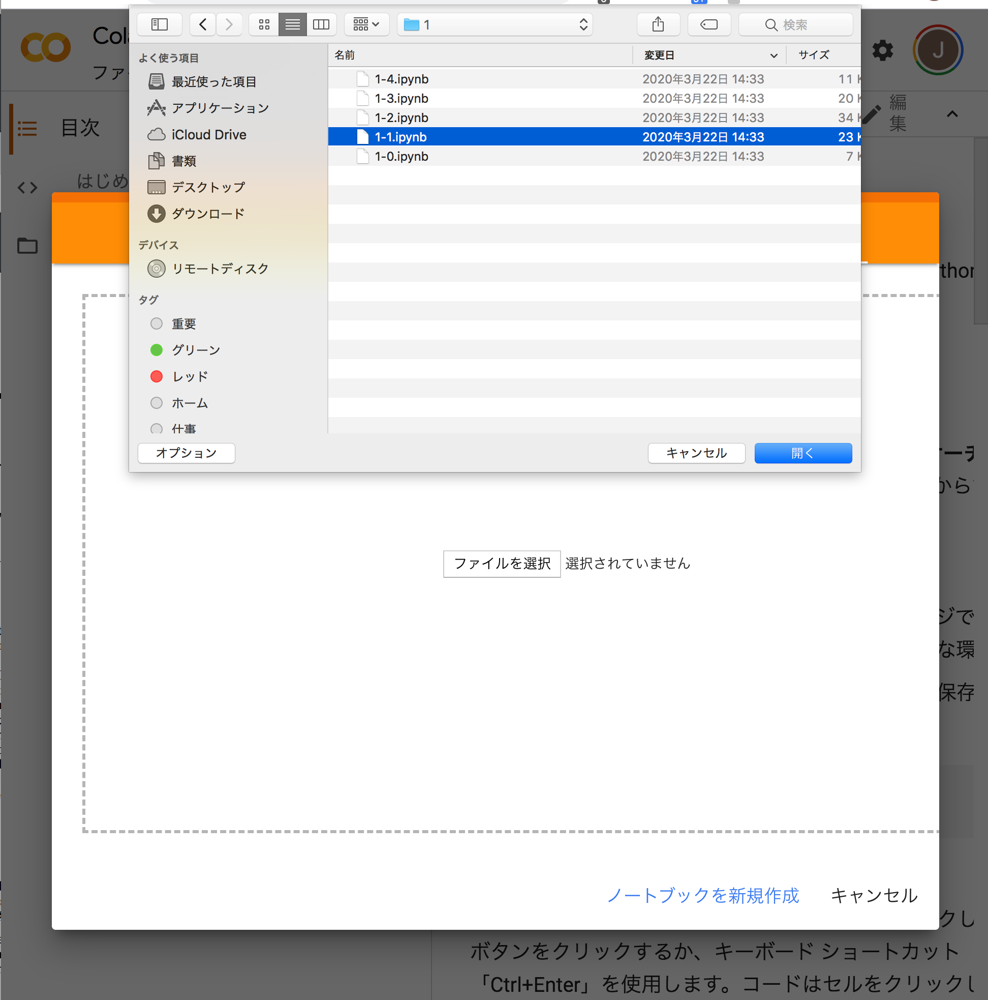
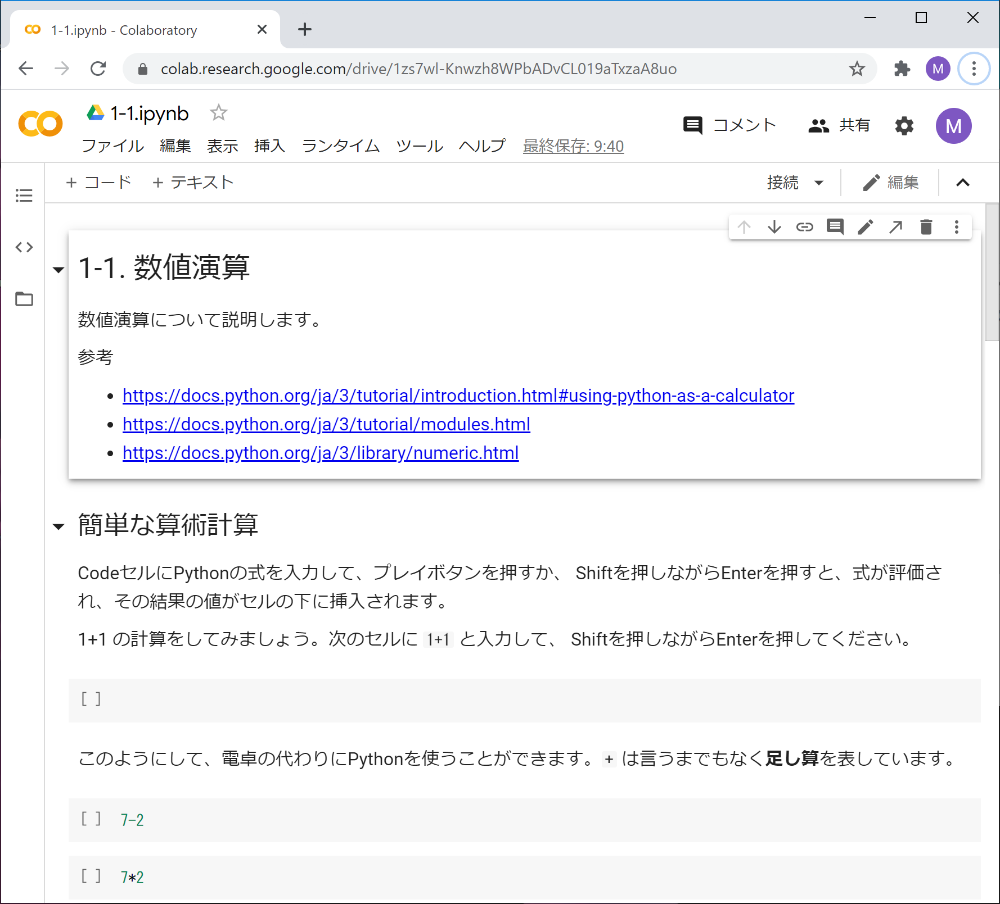
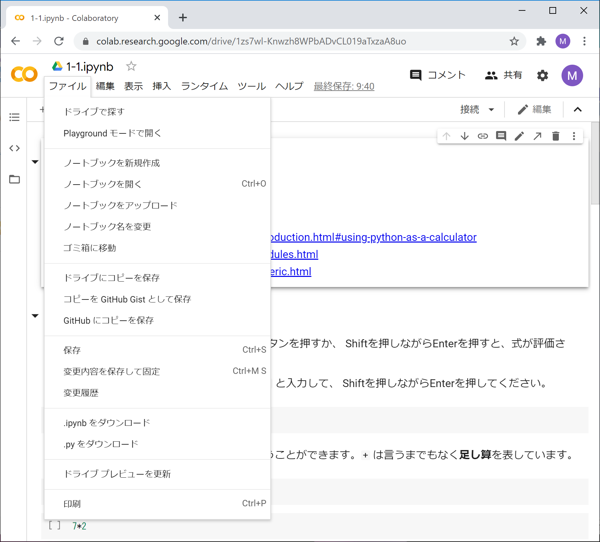
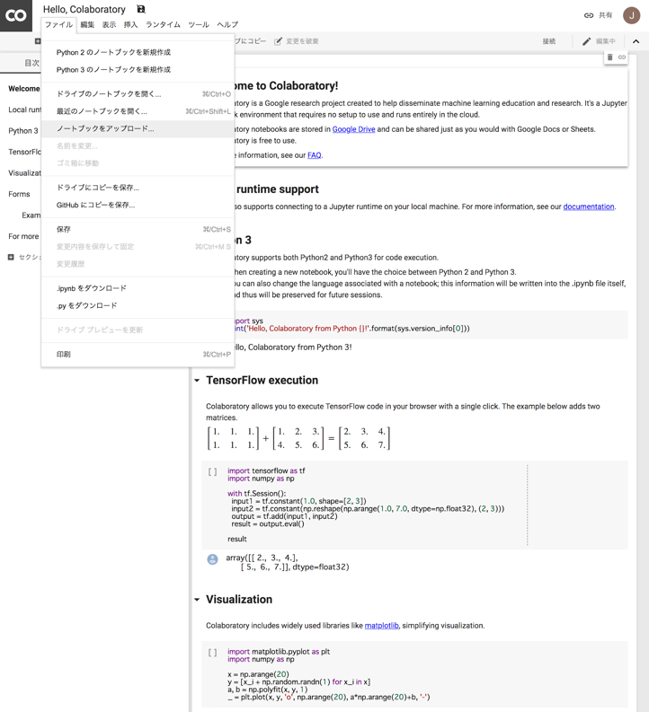

1-0. Colaboratoryによるノートブックの使い方¶
Colaboratoryによるノートブックの使い方について説明します。
Colaboratoryの立ち上げ¶
ブラウザにGoogleアカウント（個人でもECCSでもどちらでもよい）でログインした後に、以下のURLを開いてください。
ノートブックのアップロード¶
Colaboratoryを立ち上げると、以下のようにノートブックを指定することが求められますので、 「アップロード」のタブを選択してください。

そして、アップロードすべきファイルを指定してください。

指定したファイルは、いったん自分の Google Drive にアップロードされてから、 Colaboratoryによって開かれます。 ブラウザでは以下のように表示されるでしょう。

なお、ノートブックには ipynb という拡張子（エクステンション）が付いています。
教材のオープン¶
HTML版の教材の「Open in Colab」をクリックしたり、 Google Drive上の教材を直接Colabratoryでオープンした場合、 指定したノートブックがオープンされますが、ノートブックを操作した結果は Google Drive上に保存されません。 ノートブックの上方にある「ドライブにコピー」のボタンを押せば、 自分のGoogle Drive上にノートブックのコピーが作られてオープンされます。 ノートブックを操作した結果はコピーに保存されます。
ノートブックのダウンロード¶
Google Drive 上のノートブックをパソコンにダウンロードするには、 Colaboratoryのファイルメニューで「.ipynb をダウンロード」を選択します。

ノートブックのアップロード（再び）¶
最初のノートブックを開いた後に、別のノートブックを開くには、Colaboratoryのファイルメニューで 「ノートブックをアップロード」を選択してください。

ノートブックの作成¶
また、ノートブックを新たに作成するには、Colaboratoryのファイルメニューで 「ノートブックを新規作成」を選択してください。 Untitled0.ipynb という名前のノートブックが作られます。 上方に表示されたタイトルをクリックすれば名前を変更することができます。
ノートブックの操作¶
ノートブックの上方のタイトルの下には、「ファイル」や「編集」などのメニュー、 その下には「+ コード」と「+ テキスト」というボタンが表示されています。
Ctrl+s（Macの場合は Cmd+s）を入力することによって、 編集・操作中のノートブックを Google Drive のファイルにセーブできます。 なお、ノートブックは適当なタイミングでオートセーブされます。 ファイルメニューの右に「すべての変更を保存しました」と表示されていれば、 Ctrl+s を入力する必要はありません。
以下の参考文献は、Jupyter Notebook に関する一般的な解説です。 jupyterコマンドを起動してブラウザでノートブックを使うのと、 Google Colaboratory によりノートブックを使うのでは、 インタフェースが大分異なっていることに注意してください。
セル¶
ノートブックはセルから成り立っています。
主に次の二種類のセルを使います。
Codeセル（コードセル）： Pythonのコードが書かれたセルです。 Codeセルの左端には
[ ]と表示されています。 Codeセルの中のコードを実行するには、[ ]のところにマウスカーソルを移動してクリックします。[ ]のところにマウスカーソルを移動すると、●の中に▷が表示されます。 これはプレイボタンを意味します。 プレイボタンを押すとコードが実行され、その結果がセルの下部に挿入されます。 （Shiftを押しながらEnterを押しても実行できます。）Markdownセル（テキストセル）： 説明が書かれたセルです。 このセル自身はMarkdownセルです。
[ ]:
1+1
セルの編集¶
Codeセル上のプレイボタンでないところにマウスカーソルを移動しクリックすると、 Codeセルが選択され、文字カーソルが表示されて、セルの編集が可能になります。 Ctrlの付かない文字はそのまま挿入されます。
以下のような編集コマンドが使えます。
Ctrl+c: copy
Ctrl+x: cut
Ctrl+v: paste
Ctrl+z: undo
…
Codeセルが選択されているとき、Shift+Enter（もしくはShift+Return）を入力すると、 セルの中のコードが実行されて、次のセルが選択されます。
練習¶
次のCodeセルを選択して 10/3 と入力して実行してください。
[ ]:
Codeセルの実行が終了し、別のセルが選択されると、 セルの左端は [2] のようになり、[ ] の中に番号が入ります。 この番号は、そのCodeセルが何番目に実行されたかを示すもので、 Codeセルが実行されるたびに1ずつ増えます。 同じセルを続けて実行すれば、この番号は1ずつ増えるでしょう。
セルの挿入¶
Codeセルを新たに挿入するには、 ファイルメニューの下の「+ コード」ボタンを押します。 現在選択されているセルの下にCodeセルが挿入されます。
たとえば、このMarkdownセルを選択してから、 「+ コード」ボタンを押してみてください。 このMarkdownセルを選択するには、マウスカーソルをここに持って来て クリックすればよいです。説明の全体が四角で囲まれるはずです。
Markdownセルを新たに挿入するには、 ファイルメニューの下の「+ テキスト」ボタンを押します。 なお、ここではMarkdownセルの説明は行っていません。
セルの実行が止まらないとき¶
Codeセルの左端の●の中に□が表示され、 その周りをノの字が回り続けているならば、セルのコードは実行中です。 いつまでたってもコードの実行が終了しない場合は、 そのアイコンを押して、コードの実行を強制終了してください。 ●の中に□が表示されたアイコンはストップボタンを意味します。
たとえば、次のような例です。 プレイボタンを押し実行中であることを確かめてから、 ストップボタンを押してください。
[ ]:
while True:
pass
セルの操作¶
セルを選択するとセルの右上に色々なボタンが表示されます。 これらを押すことにより、セルの削除、セルの移動、コピーペーストなど、 セルに対する各種の操作を行うことができます。
ノートブックの参照¶
Colaboratoryが使用するノードブックは Google Drive 上にあります。 右上の「共有」のボタンを押すことにより、 ノートブックの共有設定を変えることができます。 その上で、ノートブックが表示されているブラウザ上のURLを伝えることにより、 教員やTAにノートブックを見せることができます。
[ ]: